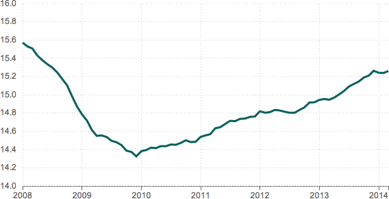

date,jobs 2008-01,15570.3 2008-02,15527.9 2008-03,15506.2 2008-04,15428.9 2008-05,15379.3 2008-06,15334.5 2008-07,15298.8 2008-08,15245.0 2008-09,15172.0 2008-10,15102.9 2008-11,14980.7 2008-12,14869.9 2009-01,14783.0 2009-02,14714.5 2009-03,14617.7 2009-04,14549.0 2009-05,14553.9 2009-06,14536.8 2009-07,14495.2 2009-08,14479.1 2009-09,14447.2 2009-10,14386.7 2009-11,14372.7 2009-12,14324.5 2010-01,14381.2 2010-02,14394.2 2010-03,14419.9 2010-04,14414.4 2010-05,14436.8 2010-06,14436.1 2010-07,14454.1 2010-08,14451.0 2010-09,14472.0 2010-10,14499.7 2010-11,14481.2 2010-12,14483.9 2011-01,14538.4 2011-02,14554.5 2011-03,14567.3 2011-04,14631.6 2011-05,14643.4 2011-06,14679.3 2011-07,14713.5 2011-08,14709.9 2011-09,14735.5 2011-10,14738.3 2011-11,14756.9 2011-12,14761.9 2012-01,14818.1 2012-02,14803.0 2012-03,14808.3 2012-04,14832.7 2012-05,14827.4 2012-06,14813.7 2012-07,14802.0 2012-08,14802.1 2012-09,14833.5 2012-10,14860.9 2012-11,14915.4 2012-12,14916.6 2013-01,14943.5 2013-02,14953.1 2013-03,14944.4 2013-04,14967.0 2013-05,15001.7 2013-06,15040.4 2013-07,15088.8 2013-08,15118.2 2013-09,15145.5 2013-10,15187.4 2013-11,15209.7 2013-12,15261.7 2014-01,15240.2 2014-02,15238.3 2014-03,15259.6
Build Chart
Retail employment, in millions (2008-2014)

Note
Figures for February and March 2014 are preliminary.